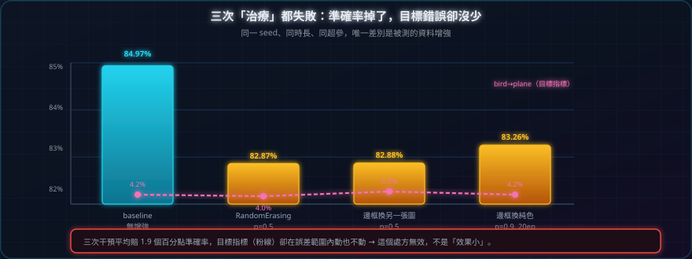

三次「治療」，全部失敗
一句話：就算診斷對了，處方也可能完全無效——而且還要付「準確率下降」的掛號費。

這個實驗在做什麼
知道模型靠背景之後，設計三個處方做 A/B：同 seed、同時長、同超參，唯一差別是被測的資料增強，最後用同一個指標（bird→plane）判斷有沒有效。
- 輸入CIFAR-10，wide 架構，12 epochs、batch 512、seed 0
- 操作① 加 RandomErasing p=0.5 ② 邊框換成另一張圖 p=0.5 ③ 邊框換純色 p=0.9（20 epochs）；每次訓練完都跑一次 confusion_probe
- 輸出4 組（總準確率、bird 準確率、bird→plane 比率）與柱狀圖
- 判讀目標指標是否顯著下降；若只掉準確率而指標不動，代表處方無效
數字
| 處方 | 想法 | 總 acc | bird acc | bird→plane |
|---|---|---|---|---|
| baseline | — | 84.97% | 77.6% | 4.2%（42） |
| ① RandomErasing p=0.5 | 隨機遮一塊 | 82.87% | 75.1% | 4.0%（40） |
| ② 邊框換另一張圖 p=0.5 | 打散「天空↔鳥」 | 82.88% | 72.5% | 5.0%（50） |
| ③ 邊框換純色 p=0.9, 20ep | 最強干預硬碰硬 | 83.26% | 72.7% | 4.2%（42） |
三次平均賠 1.9 個百分點的準確率，目標指標（4.2%）動也不動。
STEP 03為什麼會失敗
看了實際樣本才發現三件事同時成立：
- 6 像素的邊框只佔 20–25% 的背景，剩下的背景還在圖片中心，模型照樣看得到。
- 邊框裡常含物件本身：翅膀、電線、樹枝都穿過邊界。換邊框 = 順便切掉翅膀 → 準確率當然掉。
- 「遮一塊」不等於「斷開關聯」：RandomErasing 只是加雜訊，天空還是天空。
打個比方：你想讓一個靠「看天氣」決定帶傘的同學，改成看雲的形狀。遮住他一角窗外（RandomErasing）→ 他看其他角；換成別人家的窗外（邊框換圖）→ 別人家的也是天空；把窗框塗彩色（換純色）→ 他改看天氣預報。三次都沒打中要害。
學到什麼
診斷對 ≠ 處方對。干預的「覆蓋率」與「是否打到物件」決定成敗，跟想法多聰明無關。真正該做的是「把窗外完全換掉」，但那需要物件分割——我們沒有這個工具，所以到此為止。
STEP 05程式碼
train_cnn.py
--erase、--bg-mix、--bg-fill image|color、--seed 就是這次 A/B 的開關
confusion_probe.py
每次訓練後量同一個指標，避免用總準確率自我安慰
執行方式：
python train_cnn.py --dataset cifar10 --arch wide --epochs 12 --batch-size 512 --seed 0 --erase 0.5 --out run_B
python train_cnn.py --dataset cifar10 --arch wide --epochs 20 --batch-size 512 --seed 0 --bg-mix 0.9 --bg-fill color --out run_D完整程式碼與安裝說明：code/README.md｜ GitHub 上的 code 目錄